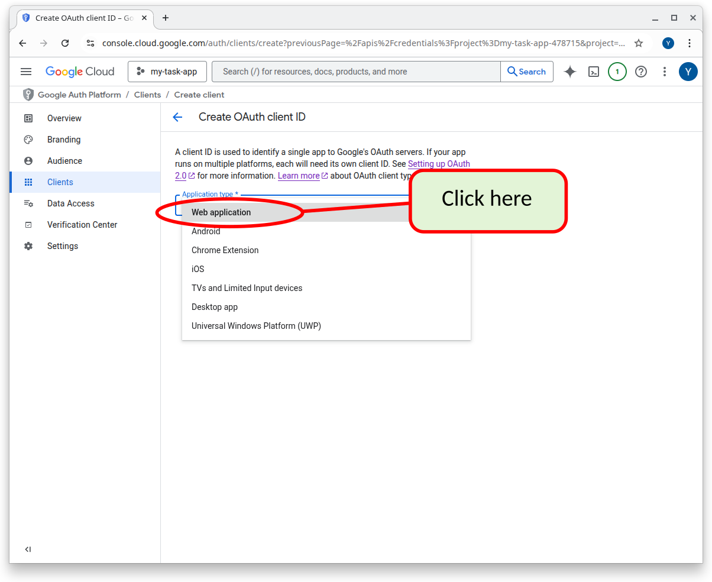

79 79. Step 6: setup authentication (Google OAuth)
smaller – ctrl/cmd + shift + S
max – ctrl/cmd + shift + M
reset – ctrl/cmd + shift + 0
Alternative: Click on a screenshot to make it full screen.
Resize the screenshots on this page with the buttons at the top right of this screen.
This step connects your Supabase project with Google’s OAuth 2.0 service so users can log in using their Google accounts.
OAuth stands for “Open Authentication”. It is a standard that website owners can use to integrate with 3rd party services, such as Google, Github, etc, so that the users of the website can use their Google/Github/etc password to login.
From the perspective of our website, task-app, the code to do all this is run on the Supabase Servers. Therefore we will have to configure the Supabase Servers with the info necessary to make this happen.
In addition will will need to setup a Google Cloud Project here: https://console.cloud.google.com/. This is where you will need to setup Google to recognize your app and allow your users to login using their google accounts.
See this page for more information about setting up Google’s OAuth 2.0 service. https://developers.google.com/identity/protocols/oauth2/
79.1 Create a Google Cloud Project
Go to https://console.cloud.google.com/ and login with your google userid and password.
The rectangle in the upper left corner shows the project you are working on. If you’ve never used google cloud the box will say “Select a project” (as it does in the screenshot.) Click on the rectangle to select the project you want. See next step to create a new project.
To create a new project, click Create Project and give it a clear name
Enter a name for your project and click the create button.
Navigate to APIs & Services → Credentials.
Click Create Credentials → OAuth client ID to start generating keys.


79.2 Configure the OAuth Consent Screen
The flow takes a slightly different path if you’ve never setup Google OAuth for this project or if you have started to set it up before.
If this is the first time you’re setting up Google OAuth use the steps shown below.
If you started to setup Google OAuth below - skip to the next section.
79.2.1 First time setting up Google OAuth
Continue as shown below or start again from APIs & Services → OAuth consent screen.
This step can be accomplished in one of two ways. Read the following “Note”.
If you followed all of the above steps, you should see the following screen. Click as shown below. (However, if you took a break from what you were doing you can continue by going to back to https://console.cloud.google.com/ and clicking on APIs & Services as shown in the next NOTE.


If you took a break and came back, or you got lost, you can continue by going to back to https://console.cloud.google.com/ and clicking on APIs & Services as shown below.


79.2.2 If you’ve started to setup Google OAuth before
Navigate back to https://console.cloud.google.com/ and click on APIs & Services as shown below.
Then click on OAuth Consent Screen
79.3 Add your basic app info:
Whether this is the first time you are configuring Google OAuth, you should see one of the screens similar to those shown below.NOTE that if you have already started to configure Google OAuth before, you may need to click on the Branding option in the left hand menu (2nd choice from the top- see the blue oval in the picture).
If you don’t see the info mentioned below, click on the different menu choices on the left hand side to search for where to enter the info below. Google often updates their website and the exact location for the info may have mooved by the time you read this.
The information that you fill out on this screen will affect what the users see when they try to “login with google”


79.3.1 App name
A name for your app (users will see this)
79.3.2 User support email
email for users to contact you with questions
79.3.4 Audience
Under “Audience” choose External
This will allow you app to be viewed from anywhere in the world. However, your app must undergo review by Google before being allowed to use Google OAuth2 externally. Until then you can setup “test users” with google accounts. Only the specified “test users” will be allowed to “sign in with google” until your app has been reviewed by Google.
You will setup the test users later.
NOTE: You can only choose “Internal” if you’ve setup an organization with Google.
79.3.5 Developer Contact Information
Type an email address for Google to contact you for technical issues.
79.3.6 Click “Save”
Save and continue through the remaining steps.
79.4 Get Your OAuth Credentials
Return to APIs & Services → Credentials.
Click as below to create an OAuth 2.0 Client ID.
Choose Web application as the application type.

You need to give a name to the application (Web client 1” in the screenshot below). This name is only used internal to the Google Cloud environment to refer to the application that you are setting up. This name will not appear anywhere to your users.You then need to setup the URIs (i.e. URLs) that the Supabase servers will be contacted with from Google to indicate that the login was successful. You need to get this info from your Supabase configuration. This info was also saved in your .env.local file
Add your Supabase callback URL under Authorized redirect URIs:
https://[your-project-ref].supabase.co/auth/v1/callbackYou can get your-project-ref by doing one of the following:
logging into your Supabase account and getting this info from the Supabase settings.
You also can retreive it from the .env.local file that you had setup earlier. That file contained a line such as :
NEXT_PUBLIC_SUPABASE_URL=“https://dfdqbazsihcpsomfkyja.supabase.co”
In this example dfdqbazsihcpsomfkyja is your-project-ref. Therefore the Authorize redirect URI for this example is:
https://dfdqbazsihcpsomfkyja.supabase.co/auth/v1/callbackObviously you will have a different project-ref and therefore a slightly different URL.
Click “Create button”
After creation, copy your Client ID and Client Secret. You WILL NOT BE ABLE TO GET THESE CODES AGAIN FROM GOOGLE. Store these codes in a safe place. DO NOT store these code in any files that will be committed to git.


79.5 Configure Google Auth in Supabase
- Open your Supabase dashboard.
- Navigate to Authentication → Providers.
- Select Google.
- Paste your Client ID and Client Secret.
- Click Save to enable Google login for your project.
With this configuration complete, Supabase can now handle secure login flows using Google OAuth.
Practice Questions
Easy
Question 1 · Short answer
In plain English, what does setting up Google OAuth let the users of task-app do?
Question 2 · Multiple choice
On which website do you register your app with Google and create its OAuth credentials?
- The Supabase dashboard (supabase.com)
- The Google Cloud console (console.cloud.google.com)
- The OpenAI platform (platform.openai.com)
- The Stripe dashboard (stripe.com)
Question 3 · Multiple choice
When you create the OAuth client ID, which application type do you choose?
- Web application
- Desktop app
- Android
- iOS
Question 4 · True or false
The name you give your OAuth client (for example “Web client 1”) is shown to your users when they sign in with Google.
Question 5 · Matching
Match each consent-screen setting with its purpose.
| Setting | Purpose | |
|---|---|---|
| 1. App name | A. Your Supabase project’s domain, such as <project-ref>.supabase.co |
|
| 2. User support email | B. Who the app is for: External (people with any Google account) or Internal (only your own organization) | |
| 3. Authorized domains | C. The name users see when they sign in with Google | |
| 4. Audience | D. An address Google uses to contact you about technical issues | |
| 5. Developer contact information | E. An address your users can write to with questions |
Medium
Question 6 · Write the URL
Maria’s .env.local contains:
NEXT_PUBLIC_SUPABASE_URL="https://mqhzrtlkdbvcpweoaxsn.supabase.co"What exactly should she enter under Authorized redirect URIs?
Question 7 · Multiple choice
After Google creates your OAuth client, where do you paste the Client ID and Client Secret?
- Into
.env.local, asNEXT_PUBLIC_...variables - Into the Google provider settings in your Supabase dashboard (in the Authentication section)
- Into
supabase/config.toml - Into the project’s README file, so teammates can find them
Question 8 · Short answer
Why are the Google credentials given to Supabase rather than written into the Next.js code of task-app?
Question 9 · Ordering
Put these steps in the right order.
- Paste the Client ID and Client Secret into the Google provider settings in Supabase and save
- Create a Google Cloud project
- Create an OAuth client ID (type: Web application) with your Supabase callback URL as an authorized redirect URI
- Fill in the consent screen information (app name, support email, authorized domain, audience, contact email)
- Copy the Client ID and Client Secret right away and store them in a safe place
Question 10 · Short answer
In one or two sentences, what is the redirect URI for?
Question 11 · Multiple choice
Under Audience, the page tells you to choose External. Why not Internal?
- Internal is only available if you have set up an organization with Google
- Internal apps only work on Android phones
- Internal apps cannot be used with Supabase
- Internal hides the app name from users
Hard
Question 12 · Scenario
Your Audience is External and your app is still in the testing stage. You added your own Google account as a test user, and you can sign in. Your friend tries to sign in, and Google blocks them. Why, and how can you let your friend test the app?
Question 13 · Find the bug
Sam’s sign-in fails with Google’s error redirect_uri_mismatch. The authorized redirect URI he entered is:
https://bvcxzlkjhgfdsapoiuyt.supabase.co/auth/callbackWhat is wrong, and how does he fix it?
Question 14 · Scenario
You created the OAuth client, but you closed the window without copying the Client Secret. What now?
Question 15 · True or false
When a user signs in with Google, task-app receives the user’s Google password and checks it.
Question 16 · Short answer
The page says never to store the Client ID and Client Secret in a file that will be committed to Git. Why does that matter, and where should you keep them instead?